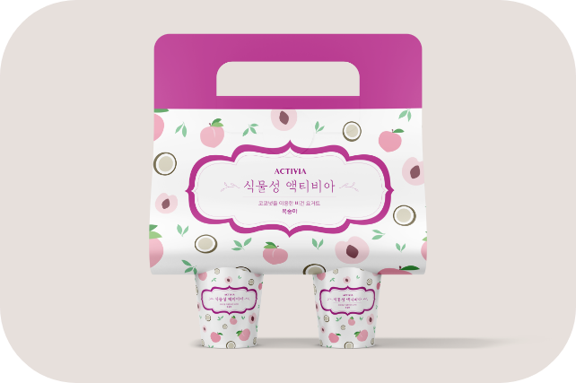
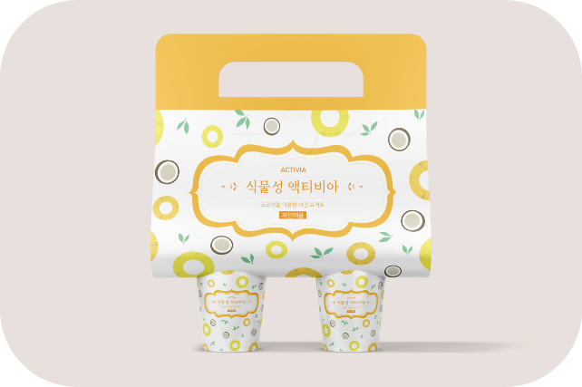
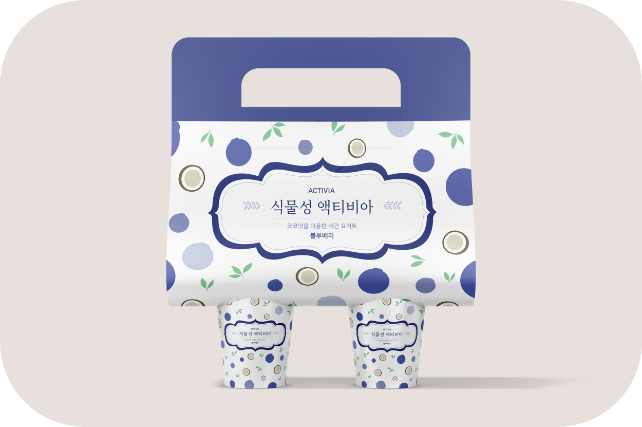

비건은 본래 육류나 계란, 우유 등 동물성 식품을 배제하고
식물성 음식을 먹는 채식주의자다.
비건 요리의 시장이 체인점까지 영향을 미치는 것을 보고 비건 요리에 대해 찾아보다가
"액티비아 비건 요거트"를 보게 되었고 건강한 느낌을 주는 디자인이었지만 식욕을 돋우는
디자인은 아니어서 비건에 관심이 있지 않는 사람이나 비건을 잘 모르는 사람들이 사 먹지
않을 것 같았다. 그래서 기존의 있던 맛은 이용하되 리디자인을 하기로 됐다. 커피 캐리어 형식을
이용해서 들고 다니기 편하게 만들 패키지를 선택했고 과일을 단순화해서 귀엽고 발랄한
이미지를 주면서 어떤 맛인지 보여주게끔 만들었다.
비건 요리의 시장이 체인점까지 영향을 미치는 것을 보고 비건 요리에 대해 찾아보다가
"액티비아 비건 요거트"를 보게 되었고 건강한 느낌을 주는 디자인이었지만 식욕을 돋우는
디자인은 아니어서 비건에 관심이 있지 않는 사람이나 비건을 잘 모르는 사람들이 사 먹지
않을 것 같았다. 그래서 기존의 있던 맛은 이용하되 리디자인을 하기로 됐다. 커피 캐리어 형식을
이용해서 들고 다니기 편하게 만들 패키지를 선택했고 과일을 단순화해서 귀엽고 발랄한
이미지를 주면서 어떤 맛인지 보여주게끔 만들었다.


샴푸바의 취지에 맞게 재활용이 되는 패키지를 만들려고 했다.
“샴푸바의 재료가 친환경적으로 만들어져있기 때문에 동물이
다가간다”라는 의미를 넣고 싶어서 사람들에게 사랑받는 고양이를
캐릭터화했고 샴푸바 향에 따라서 그림과 색깔의 콘셉트를 맞추면서도
색깔의 조화가 깨지지 않게 같은 채도로 맞추었다.
“샴푸바의 재료가 친환경적으로 만들어져있기 때문에 동물이
다가간다”라는 의미를 넣고 싶어서 사람들에게 사랑받는 고양이를
캐릭터화했고 샴푸바 향에 따라서 그림과 색깔의 콘셉트를 맞추면서도
색깔의 조화가 깨지지 않게 같은 채도로 맞추었다.